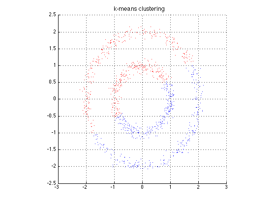
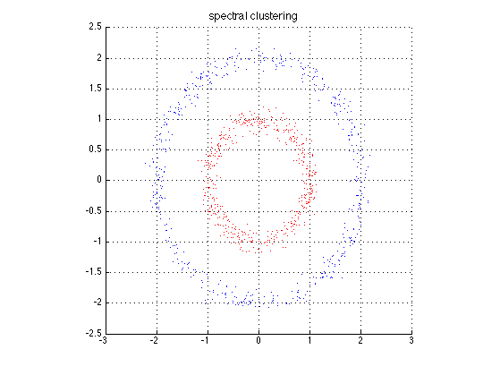
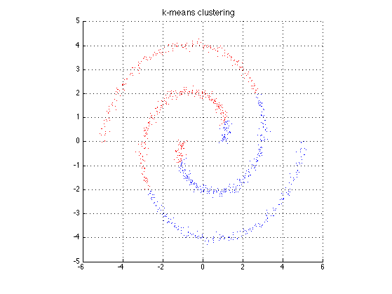

demo of spectral clustering
function spectralClusteringDemo()
setSeed(0);
datatypes = {'circle', 'spiral'};
for i=1:numel(datatypes)
switch datatypes{i}
case 'circle'
data = sample_circle(2);
case 'spiral'
data = sample_spiral();
end
[centers, mincenter] = kmeansElkan(data, ...
[0, 1.5;
0, -1.5]);
group1 = (mincenter == 1);
group2 = (mincenter == 2);
figure;
plotData(data, group1, group2);
title('k-means clustering', 'FontSize', 12, 'FontWeight', 'bold');
sigma = 0.1;
num_clusters = 2;
S1S2 = -2 * data * data';
SS = sum(data.^2,2);
A = exp(- (S1S2 + repmat(SS, 1, length(SS)) + repmat(SS', length(SS), 1)) / (2 * sigma^2));
D = diag(1 ./ sqrt(sum(A, 2)));
L = D * A * D;
warning('off');
[X, D] = eigs(L, num_clusters);
warning('on');
Y = X ./ repmat(sqrt(sum(X.^2, 2)), 1, num_clusters);
[centers, mincenter] = kmeansElkan(Y, num_clusters);
group1 = (mincenter == 1);
group2 = (mincenter == 2);
figure;
plotData(data, group1, group2);
title('spectral clustering', 'FontSize', 12, 'FontWeight', 'bold');
drawnow
end
end
function plotData(data, group1, group2)
hold on;
plot(data(group1,1), data(group1,2), 'r.');
plot(data(group2,1), data(group2,2), 'b.');
axis square;
grid on;
hold off;
end
function data = sample_circle( num_cluster )
points_per_cluster = 500;
bandwidth = 0.1;
if nargin == 0
num_cluster = 2;
end
data = zeros([num_cluster*points_per_cluster, 2]);
idx = 1;
for k = 1 : num_cluster
for n = 1 : points_per_cluster
theta = 2 * pi * rand;
rho = k + randn(1) * bandwidth;
[x, y] = pol2cart(theta, rho);
data(idx,:) = [x, y];
idx = idx + 1;
end
end
end
function data = sample_spiral()
points_per_cluster = 500;
bandwidth = 0.1;
data = zeros([points_per_cluster, 2]);
for k = 1 : points_per_cluster
w = k / points_per_cluster;
data(k,1) = (4 * w + 1) * cos(2 * pi * w) + randn(1) * bandwidth;
data(k,2) = (4 * w + 1) * sin(2 * pi * w) + randn(1) * bandwidth;
end
data = [data; -data];
end
  